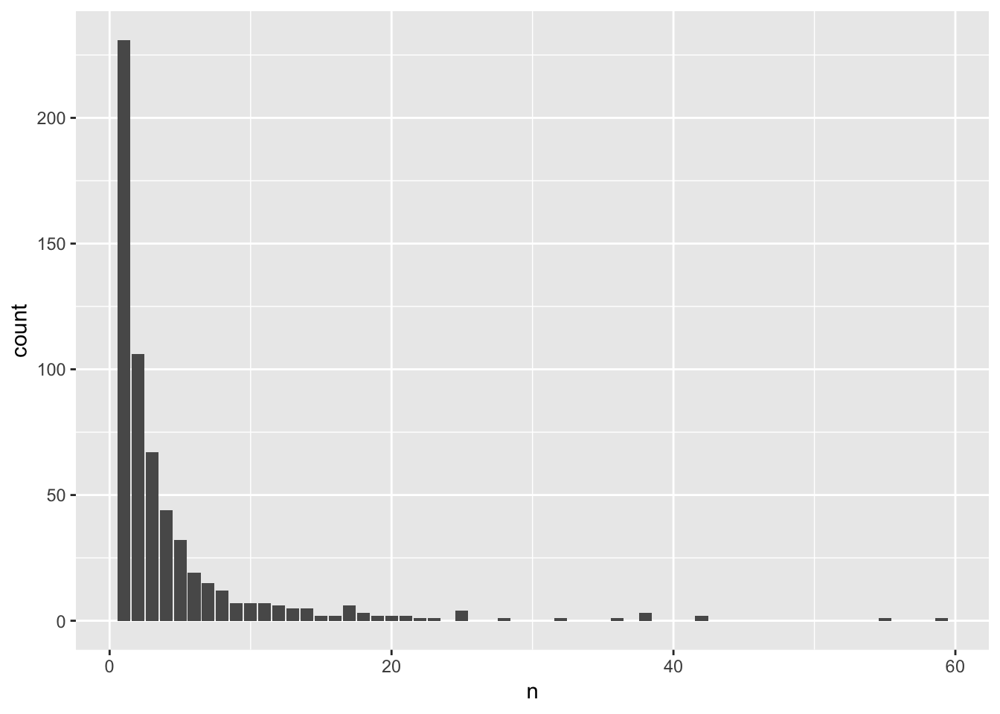
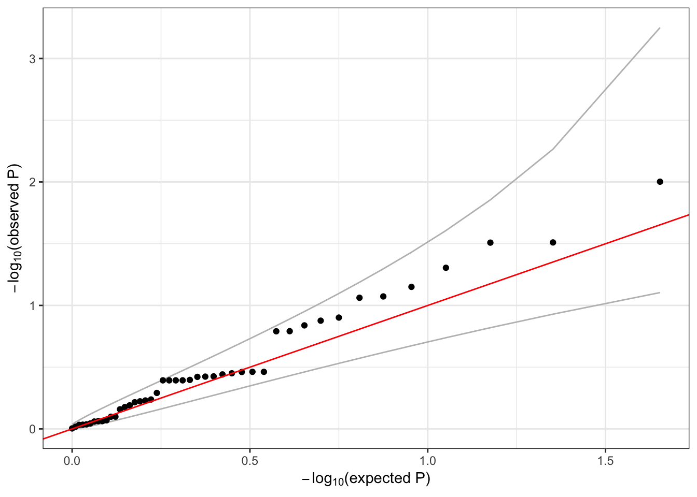

10 Variant annotation
10.1 Using Bioconductor annotation resources
In this example, we illustrate defining aggregate units based on known genes.
First, we load the null mixed model and open the GDS file.
modfile <- "data/null_mixed_model.RData"
nullmod <- TopmedPipeline::getobj(modfile)
sampfile <- "data/sample_phenotype_annotation.RData"
annot <- TopmedPipeline::getobj(sampfile)
gdsfile <- "data/1KG_phase3_subset_chr1.gds"
library(SeqVarTools)
gds <- seqOpen(gdsfile)
seqData <- SeqVarData(gds, sampleData=annot)We use the human genome annotation from Bioconductor to identify genes.
library(GenomicRanges)
library(TxDb.Hsapiens.UCSC.hg19.knownGene)
# return the variants in seqData as a GRanges object
gr <- granges(gds)
gr## GRanges object with 1120 ranges and 0 metadata columns:
## seqnames ranges strand
## <Rle> <IRanges> <Rle>
## 1 1 970546 *
## 2 1 985900 *
## 3 1 1025045 *
## 4 1 1265550 *
## 5 1 1472676 *
## ... ... ... ...
## 1116 1 248715186 *
## 1117 1 248715606-248715610 *
## 1118 1 248761613 *
## 1119 1 248894546 *
## 1120 1 249149558 *
## -------
## seqinfo: 1 sequence from an unspecified genome; no seqlengths# find variants that overlap with each gene
txdb <- TxDb.Hsapiens.UCSC.hg19.knownGene
gr <- renameSeqlevels(gr, paste0("chr", seqlevels(gr)))
ts <- transcriptsByOverlaps(txdb, gr, columns="GENEID")
# simplistic example - define genes as overlapping transcripts
genes <- reduce(ts)
genes <- renameSeqlevels(genes, sub("chr", "", seqlevels(genes)))
genes## GRanges object with 384 ranges and 0 metadata columns:
## seqnames ranges strand
## <Rle> <IRanges> <Rle>
## [1] 1 955503-991499 +
## [2] 1 2160134-2241652 +
## [3] 1 2985742-3355185 +
## [4] 1 6484848-6521004 +
## [5] 1 6845384-7829766 +
## ... ... ... ...
## [380] 1 245912642-246670644 -
## [381] 1 246703863-246729565 -
## [382] 1 247108849-247242115 -
## [383] 1 247463622-247495045 -
## [384] 1 249144203-249153315 -
## -------
## seqinfo: 93 sequences (1 circular) from hg19 genomeWe run a burden test, setting a maximum alternate allele frequency to exclude common variants.
# create an iterator where each successive unit is a different gene
iterator <- SeqVarRangeIterator(seqData, variantRanges=genes, verbose=FALSE)
# do a burden test on the rare variants in each gene
assoc <- assocTestAggregate(iterator, nullmod, AF.max=0.05, test="Burden")## # of selected samples: 100head(assoc$results)## n.site n.alt n.sample.alt Score Score.SE Score.Stat Score.pval
## 1 2 12 12 -0.311130943 0.26363332 -1.18016548 0.23793441
## 2 1 1 1 0.025421814 0.07341585 0.34627148 0.72913870
## 3 1 2 2 0.201648520 0.11806291 1.70797520 0.08764094
## 4 2 4 4 -0.004437774 0.16591324 -0.02674756 0.97866108
## 5 1 8 8 0.028460319 0.21098460 0.13489287 0.89269657
## 6 0 0 0 NA NA NA NAhead(assoc$variantInfo)## [[1]]
## variant.id chr pos allele.index n.obs freq weight
## 1 1 1 970546 1 100 0.015 1
## 2 2 1 985900 1 100 0.045 1
##
## [[2]]
## variant.id chr pos allele.index n.obs freq weight
## 1 7 1 2185887 1 100 0.005 1
##
## [[3]]
## variant.id chr pos allele.index n.obs freq weight
## 2 15 1 3293503 1 100 0.01 1
##
## [[4]]
## variant.id chr pos allele.index n.obs freq weight
## 1 36 1 6489967 1 100 0.01 1
## 2 37 1 6503405 1 100 0.01 1
##
## [[5]]
## variant.id chr pos allele.index n.obs freq weight
## 2 39 1 7056029 1 100 0.04 1
##
## [[6]]
## [1] variant.id chr pos allele.index n.obs
## [6] freq weight
## <0 rows> (or 0-length row.names)10.2 Aggregating and filtering variants using annotation
Alternatively, we may want to import annotation from other software, such as ANNOVAR or WGSA. The output formats of variant annotation software can be quite complex, but for this exercise we use fairly simple tab-separated text files.
library(dplyr)
snv_annotation <- read.table("data/snv_parsed.tsv", sep="\t", na.strings=".", header=TRUE, as.is=TRUE)
indel_annotation <- read.table("data/indel_parsed.tsv", sep="\t", na.strings=".", header=TRUE, as.is=TRUE)
combined_annotation <- bind_rows(snv_annotation, indel_annotation)Here we remove variants that are not associated with a gene, group the variants by gene, and filter the variants for intron_variants with a CADD_phred score greater than 3 in just a few lines of code:
combined_annotation %>%
filter(VEP_ensembl_Gene_ID != ".") %>% # remove variants not annotated with a Gene_ID
group_by(VEP_ensembl_Gene_ID) %>% # aggregate by gene
filter(CADD_phred > 3) %>% # filter variants to keep only CADD_phred greater than 3
filter(stringr::str_detect(VEP_ensembl_Consequence, "intron_variant")) %>% # keep intron variants
glimpse() # view the result - 592 variants## Observations: 592
## Variables: 7
## $ CHROM <int> 22, 22, 22, 22, 22, 22, 22, 22, 22, 22...
## $ POS <int> 15699830, 15699830, 16437047, 16445862...
## $ REF <chr> "G", "G", "G", "C", "C", "G", "G", "G"...
## $ ALT <chr> "A", "A", "A", "A", "T", "A", "A", "A"...
## $ VEP_ensembl_Gene_ID <chr> "ENSG00000198062", "ENSG00000198062", ...
## $ VEP_ensembl_Consequence <chr> "intron_variant,NMD_transcript_variant...
## $ CADD_phred <dbl> 3.612, 3.612, 9.729, 3.895, 7.530, 5.3...Now that you’ve got a set of variants that you can aggregate into genic units, the data needs to be reformatted for input to the GENESIS analysis pipeline. The input to the GENESIS pipeline is a data frame with variables called group_id, chr, pos, ref, and alt. Prepare this data frame and save it for testing (You do not need to filter the variants for this exercise):
aggregates <-
combined_annotation %>%
filter(VEP_ensembl_Gene_ID != ".") %>% # remove variants not annotated with a Gene_ID
group_by(VEP_ensembl_Gene_ID) %>% # aggregate by gene
dplyr::select(group_id = VEP_ensembl_Gene_ID,
chr = CHROM,
pos = POS,
ref = REF,
alt = ALT) %>%
glimpse # inspect the tibble## Observations: 2,603
## Variables: 5
## $ group_id <chr> "ENSG00000230643", "ENSG00000226474", "ENSG0000023156...
## $ chr <int> 22, 22, 22, 22, 22, 22, 22, 22, 22, 22, 22, 22, 22, 2...
## $ pos <int> 15589963, 15613723, 15613723, 15628559, 15699830, 156...
## $ ref <chr> "G", "A", "A", "C", "G", "G", "G", "G", "G", "G", "G"...
## $ alt <chr> "T", "G", "G", "T", "A", "A", "A", "A", "T", "T", "T"...You can also compute some summary information about these aggregates, such as counting how many genic units we’re using:
length(unique(aggregates$group_id))## [1] 598We can look at the distribution of the number of variants per aggregation unit:
counts <- aggregates %>% group_by(group_id) %>% summarize(n = n())
ggplot(counts, aes(x = n)) + geom_bar()
10.3 Aggregate unit for association testing exercise
Now you can proceed to an assocation testing exercise. You will be using a slightly different gene-based aggregation unit for the assocation testing exercise. In this exercise, the genic units include SNP variants from all chromosomes (no indels, and not just chromosome 22 as before), each genic unit is expanded to include the set of SNPs falling within a GENCODE-defined gene along with 20 kb flanking regions upstream and downstream of that range, and the positions are in genome build hg19 (so that the annotation positions are consistent with the build used for genotyping data in the workshop). This set of aggregation units is not filtered by CADD score or consequence.
As before, the aggregation units are defined in an R dataframe. Each row of the dataframe specifies a variant (chr, pos, ref, alt) and the group identifier (group_id) it is a part of. Mutiple rows with different group identifiers can be specified to assign a variant to different groups (a variant can be assigned to mutiple genes).
Begin by loading the aggregation units using TopmedPipeline::getobj():
aggfile <- "data/variants_by_gene.RData"
aggunit <- TopmedPipeline::getobj(aggfile)
names(aggunit)## [1] "group_id" "chr" "pos" "ref" "alt"head(aggunit)## # A tibble: 6 x 5
## group_id chr pos ref alt
## <chr> <fct> <int> <chr> <chr>
## 1 ENSG00000131591.13 1 1025045 C T
## 2 ENSG00000169962.4 1 1265550 C T
## 3 ENSG00000205090.4 1 1472676 T C
## 4 ENSG00000171603.12 1 9788518 G A
## 5 ENSG00000204624.6 1 11593461 C T
## 6 ENSG00000270914.1 1 12068870 G A# an example of variant that is present in mutiple groups
mult <- aggunit %>%
group_by(chr, pos) %>%
summarise(n=n()) %>%
filter(n > 1)
inner_join(aggunit, mult[2,1:2])## # A tibble: 2 x 5
## group_id chr pos ref alt
## <chr> <fct> <int> <chr> <chr>
## 1 ENSG00000187952.8 1 21742183 G A
## 2 ENSG00000227001.2 1 21742183 G A10.4 Association testing with aggregate units
We can run a burden test or SKAT on each of these units using assocTestAggregate. We define a SeqVarListIterator object where each list element is an aggregate unit. The constructor expects a GRangesList, so we use the TopmedPipeline function aggregateGRangesList to quickly convert our single dataframe to the required format. This function can account for multiallelic variants (the same chromosome, position, and ref, but different alt alleles).
library(TopmedPipeline)
library(SeqVarTools)
if (exists("seqData")) {
seqResetFilter(seqData, verbose=FALSE)
} else {
gdsfile <- "data/1KG_phase3_subset_chr1.gds"
gds <- seqOpen(gdsfile)
annotfile <- "data/sample_phenotype_pcs.RData"
annot <- getobj(annotfile)
seqData <- SeqVarData(gds, sampleData=annot)
}
# subset to chromosome 1
aggunit <- filter(aggunit, chr == 1)
aggVarList <- aggregateGRangesList(aggunit)
length(aggVarList)## [1] 127head(names(aggVarList))## [1] "ENSG00000131591.13" "ENSG00000169962.4" "ENSG00000205090.4"
## [4] "ENSG00000171603.12" "ENSG00000204624.6" "ENSG00000270914.1"aggVarList[[1]]## GRanges object with 1 range and 2 metadata columns:
## seqnames ranges strand | ref alt
## <Rle> <IRanges> <Rle> | <character> <character>
## [1] 1 1025045 * | C T
## -------
## seqinfo: 23 sequences from an unspecified genome; no seqlengthsiterator <- SeqVarListIterator(seqData, variantRanges=aggVarList, verbose=FALSE)As in the previous section, we must load the null model before running the association test.
if (!exists("nullmod")) {
nmfile <- "data/null_mixed_model.RData"
nullmod <- getobj(nmfile)
}
assoc <- assocTestAggregate(iterator, nullmod, test="Burden", AF.max=0.1, weight.beta=c(1,1))## # of selected samples: 100names(assoc)## [1] "results" "variantInfo"head(assoc$results)## n.site n.alt n.sample.alt Score Score.SE
## ENSG00000131591.13 0 0 0 NA NA
## ENSG00000169962.4 0 0 0 NA NA
## ENSG00000205090.4 1 1 1 -0.08044594 0.08674420
## ENSG00000171603.12 0 0 0 NA NA
## ENSG00000204624.6 0 0 0 NA NA
## ENSG00000270914.1 1 1 1 -0.05332431 0.08057418
## Score.Stat Score.pval
## ENSG00000131591.13 NA NA
## ENSG00000169962.4 NA NA
## ENSG00000205090.4 -0.9273927 0.3537227
## ENSG00000171603.12 NA NA
## ENSG00000204624.6 NA NA
## ENSG00000270914.1 -0.6618040 0.5080969head(names(assoc$variantInfo))## [1] "ENSG00000131591.13" "ENSG00000169962.4" "ENSG00000205090.4"
## [4] "ENSG00000171603.12" "ENSG00000204624.6" "ENSG00000270914.1"head(assoc$variantInfo[[1]])## [1] variant.id chr pos ref alt
## [6] allele.index n.obs freq weight
## <0 rows> (or 0-length row.names)qqPlot(assoc$results$Score.pval)
10.5 Exercise
Since we are working with a subset of the data, many of the genes listed in group_id have a very small number of variants. Create a new set of units based on position rather than gene name, using the TopmedPipeline function aggregateGRanges. Then run SKAT using those units and a SeqVarRangeIterator.